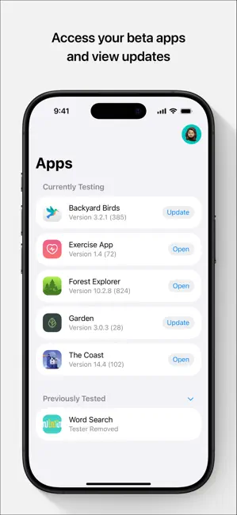
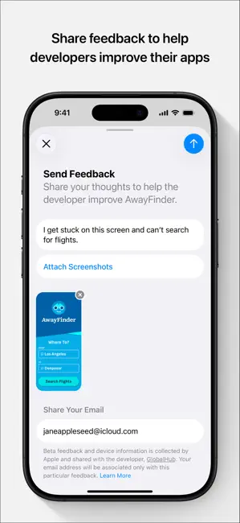

TestFlight 避坑指南：99美元花之前，这几个坑我都踩过
刚入坑 TestFlight 就被设备上限卡壳？Managed Apple ID 全账号不能用？税务信息漏填导致后续卡死？一个踩过这些坑的过来人给你讲清楚。
TestFlight 的官网把它宣传成一个「收邀请、装 Beta App」的简单工具，对吧？我一开始也这么想，直到连续踩了好几个坑——有的让我浪费了大半天排查，有的差点让我放弃整个 TestFlight 流程。这篇就把我踩过的几个实打实的坑列出来，希望你看完能比我少花点冤枉时间。
坑一：30 台设备上限，真的会把你卡死
症状：点开一个很期待的 Beta 邀请链接，页面直接告诉你「此 Apple ID 已达到设备测试上限」，邀请接受失败。更惨的是，你可能根本记不清自己之前用这个 Apple ID 在哪些设备上接受过哪些开发者的邀请。
原因：TestFlight 的 30 台设备上限是账户级别的，不是某个 App 的独立限制。换句话说，不管你接受了多少个不同开发者的测试邀请，所有用这个 Apple ID 装过 Beta App 的设备加在一起，不能超过 30 台。这包括 iPhone、iPad、Mac、Apple TV、iPod touch 这些独立终端，Apple Watch 跟随配对的 iPhone 算一台，不算独立名额。
我当时的情况是：主力 iPhone、备用 iPhone、Mac、iPad、Apple TV 各一台，再加一台旧 Mac 偶尔用来测东西——总共 6 台，离 30 还远得很。但我有一年帮不同朋友测了七八个不同的 Beta App，中间换机、刷机、重装反复好几次，每换一次就占一个新名额，旧名额没自动释放。等我第十个邀请过来时，就被卡了。

解法：去 TestFlight App 里手动清理旧设备。这个 App 在testflight下载页有各平台的获取入口。iOS 上点右上角齿轮进设置 → 找到「设备」或类似选项 → 把不再用的旧设备逐个移除。另一种方式是直接在旧设备上打开 TestFlight，选中某个 Beta App 往下滚，点「停止测试」——两种方式都会让那台设备的名额释放出来。
所以这不是 bug，是 TestFlight 的正常设计。清理完旧设备，新邀请就能正常接受了。
坑二：Managed Apple ID，全账号不能用 TestFlight
症状：你用一个看起来正常的 Apple ID 登录 App Store Connect，想创建开发者账号或者接受外部测试邀请，结果 Apple 直接拒绝，报错信息模模糊糊，搜半天也找不到原因。
原因：这个坑在 Apple Business Manager（ABM）或 School Manager（ASM）的管理员身上特别容易踩——如果你用来注册 TestFlight 的 Apple ID 是受管的（Managed Apple ID），那无论是作为开发者登录 App Store Connect，还是作为测试者接受外部邀请，Apple 都会拒绝。
受管 Apple ID 是 ABM/ASM 里由企业或学校 IT 部门统一管理的账号，通常有特定的域名后缀。Apple 不让这类账号参与 TestFlight，原因不明，但目前没有任何绕过方式。我有个朋友是某公司的 iOS 管理员，想给自家 App 跑 TestFlight，结果整个团队的 Apple ID 都是 ABM 管的，一个都不能用，最后不得不统一申请了一批新的普通 Apple ID。
解法：直接申请一个新的普通 Apple ID。用 Gmail 或 iCloud 邮箱都行，建议专门为开发者用途申请，别和日常购物、iCloud 备份的那个混在一起。注册完 Apple Developer Program 后，这个账号就是你的 Account Holder，负责上传 App、管理 TestFlight、接收收入分成。
坑三：99 美元交了，但后续流程被税务信息卡壳
症状：你注册 Apple Developer Program，填了个人信息、交了 99 美元年费，Apple 也扣了款，结果登录 App Store Connect 之后发现很多功能点不了——上传构建按钮灰的、创建测试组的选项打不开、甚至连 TestFlight 面板都进不去。
原因：App Store Connect 首次登录时会要求你补充 Tax & Banking（税务和银行）信息，这是接收 App Store 收入分成用的。很多人觉得「我现在只跑 TestFlight，还没打算上架，税表以后再说」，就跳过了。但 Apple 不这么认为——税务信息没填完之前，App Store Connect 的大部分功能是锁定的，包括 TestFlight 的构建上传。
我当时就是这么跳过去的，等我花了三天写好第一个 App、Archive 完、准备上传时才发现，整个构建流程被锁死了。填美国税表 W-8BEN 花了我至少两个小时——上面一堆我看不懂的术语，还得拍护照上传、等 Apple 审核通过。
解法：注册完开发者计划之后，第一件事就是填 Tax & Banking。别等。个人开发者大部分情况选 W-8BEN 表格，填起来比想象中简单——基本就是填个人身份信息、国籍、Apple ID、签名上传，官方的testflight文档里有完整的税务填写指引，等 Apple 审核（通常 24~48 小时）过了，功能就解锁了。如果你目前不打算上架收费 App，银行信息可以后面填，但税务表一定要先交。

坑四：公开链接指标看不懂，推广白花钱
症状：你花了时间把公开测试链接贴到 Reddit、Twitter、微博等渠道，结果过了一周看 App Store Connect 里的 TestFlight 指标——Views 挺高，但 Accepts 和 Installs 低得离谱，不知道问题出在哪。
原因：公开链接的指标有四个维度，不是一个数字。Views 只是「点开过链接的人数」，Accepts 是「成功接受邀请的人数」，Installs 是「真正装上了 Beta App 的人数」，Ineligible 是「因为条件不符被挡的人数」。如果你只看 Views 数字，很容易觉得「推广很成功」，但实际转化率可能惨不忍睹。
我第一次跑公开链接时，Views 冲到了 5000，我挺高兴，结果 Accepts 只有 400，Installs 才 280——转化率 5.6%，比正常的 10%~30% 区间低太多。仔细看才发现 Ineligible 有 1200 人，因为我设了最低 iOS 18 版本，而当时大部分测试者还在 iOS 16/17。
解法：每周至少拉一次公开链接指标，重点看 Accepts/Views 和 Installs/Accepts 两个转化率。Accepts/Views 低 → 说明 Beta App 描述不够吸引人，或者推广渠道不对。Installs/Accepts 低 → 可能是设备条件太严（检查 Ineligible 数字）、下载太慢、或者新构建还在 Processing 阶段被 App Review 卡住了。根据这些数字调条件、换渠道，比瞎猜有用得多。
防坑清单
- 接受新邀请前先清理旧设备：TestFlight 里进设置看一下当前设备数，超了就先删旧的
- 用普通 Apple ID 注册开发者：别用 ABM/ASM 管理的受管账号，直接申请新的
- 99 美元交完立刻填税务表：Tax & Banking 里的 W-8BEN，别等上架前才想起
- 公开链接每周看指标：Accepts/Views 低于 10% 就该换渠道或改描述
- 外部测试者首次跑 TestFlight 需要 App Review：别以为建好外部组就能直接发，Apple Review 通常要等 24~48 小时
这些坑我一个一个踩过来，现在用 TestFlight 跑内部和外部测试都比较顺手了。其实 TestFlight 本身是个很成熟的 Beta 分发工具，流程设计也合理——只是那些没写在文档首页的小细节，确实容易让第一次上手的人撞南墙。提前知道这些，就能省不少折腾。对了，这篇指南里引用的资料我同步维护在 GitHub、Gitee 和 GitCode 上，方便不同环境的朋友查阅。